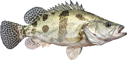
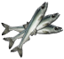
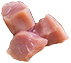
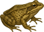
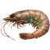
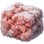
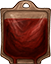
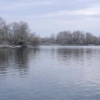

ВИД № 125 / V10Условия ловли
Глубина указана относительно глубины водоёма в точке заброса.
Ловится на спиннинг
Агрессивность
Базовая сила сопротивления: вес × 2,5. Разница уровней рыбы и снасти может увеличить нагрузку.
Коэффициент выбора
1 / 7 = 0,1429
Это вес вида при выборе улова с учётом условий ловли, а не вероятность поклёвки в процентах.
Данные каталога
Клиент v10 · снимок 29.09.2026. Автоматического обновления нет. Для специальных находок могут действовать дополнительные условия снастей.
Вес и редкость
Порог следующей редкости завершает предыдущий диапазон. Трофей — вес строго больше 6 кг. 12 кг — опорный порог эпической редкости, а не максимальный возможный вес.
Наживки

Малек (живой)
Кусочки рыбы
Лягушка
Креветка
Прикормки

Замороженный фаршПоклёвки: +60%
КровьПоклёвки: +75%
Водоёмы

Котлован
Малые Щучки · 54–57 ур.
Разряд 8 · Холод 9
Исходные параметры
| key | mandarin-fish |
|---|---|
| minWeight | 1000 |
| maxWeight | 6000 |
| rarity | 1 |
| rarity-max | 7 |
| rareWeight | 12000 |
| price | 22 |
| depth | bottom |
| areal-grass | true |
| areal-stone | true |
| areal-sand | true |
| frameId | 122 |
| uid | 125 |
| agressiveRate | 250 |
| type | fish |
| tackleBait | true |
price — исходный параметр, а не итоговая цена продажи.